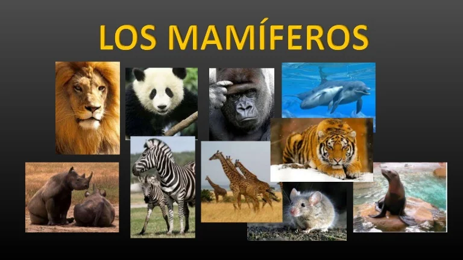

¿QUE SON LOS MAMIFEROS?
Los mamíferos son animales vertebrados, es decir, que su cuerpo está formado por huesos al igual que el de los seres humanos, y los otros animales de la naturaleza, la diferencia es que ellos tienen pelo por todo su cuerpo, su respiración es a través de los pulmones y las hembras tienen mamas, lo cual les permite alimentar a sus crías ya que segregan leche, es decir, tienen leche, este líquido ayuda a que los animales crezcan fuertes y sanos.
